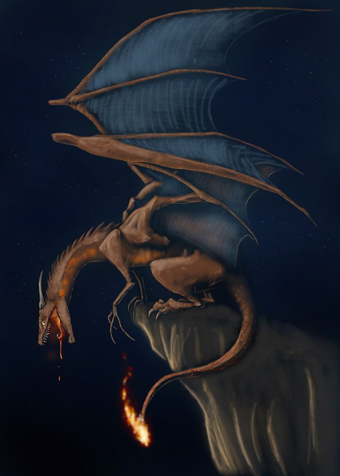
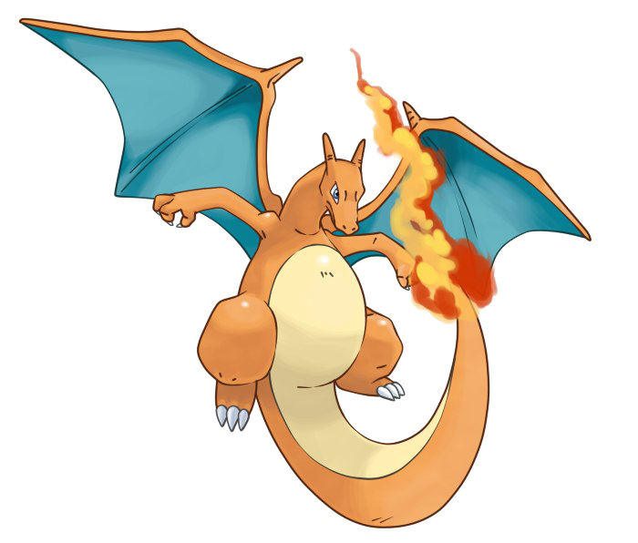
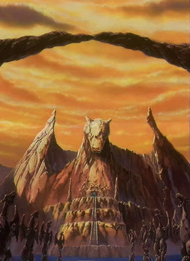

Etimología
Su nombre es una contracción de las palabras inglesas char (carbonizar, quemar, incinerar) y lizard (lagarto). Su nombre en japonés, Lizardon, es una combinación de lizard (lagarto en inglés) y don, que es un sufijo que se utiliza comúnmente en dinosaurios y significa diente. Su nombre francés, Dracaufeu, proviene de las palabras draco (dragón) y feu (fuego).
Fisiología
La figura de Charizard es la de un dragón erguido sobre sus dos patas traseras, que sostienen su peso. Posee unas poderosas alas y un abrasador aliento de fuego. También posee un predominante cuello y una poderosa cola terminada en una llama que arde con más fuerza si ha vivido duras batallas. Su sangre es muy caliente y la mantiene constante a pesar de ser un reptil; debido al fuego de su cola. Se dice que si su temperatura descendiera por lo menos 2 grados centígrados, la función de los eritrocitos de almacenar hemoglobina sería imposible.
Hábitat
La mayoría de los Charizard viven en el Valle Charirrífico, es conocido que les gusta vivir en lugares altos y calientes, por lo que se encuentran en muchas ocasiones cerca de volcanes. El hábitat de Charizard es la montaña como sus preevoluciones (Charmeleon y Charmander), sin embargo este vive en zonas más altas, aunque igualmente rocosas; esto se debe a su habilidad de poder volar. Su hábitat más famoso es el Valle Charirrífico, un lugar protegido donde los Charizard compiten entre ellos.
Comportamiento

Charizard posee un poderoso e innato sentido del honor, por lo que solo utilizará su fuerza y habilidades para cazar o luchar contra oponentes que considere a su altura. Casi siempre es muy agresivo pero si se cría bien y se tienen todas las medallas se le puede controlar como si fuera un Growlithe, hasta el punto de que los mejores entrenadores pueden llegar a montar sobre él. Es similar al comportamiento de Garchomp, un Pokémon también difícil de controlar.